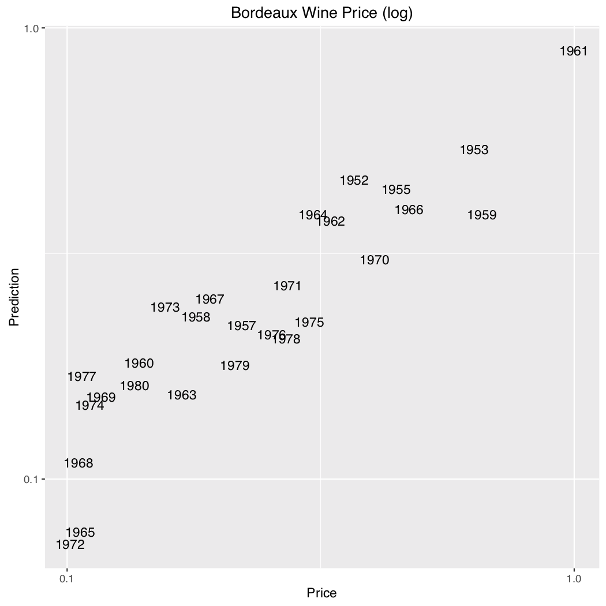
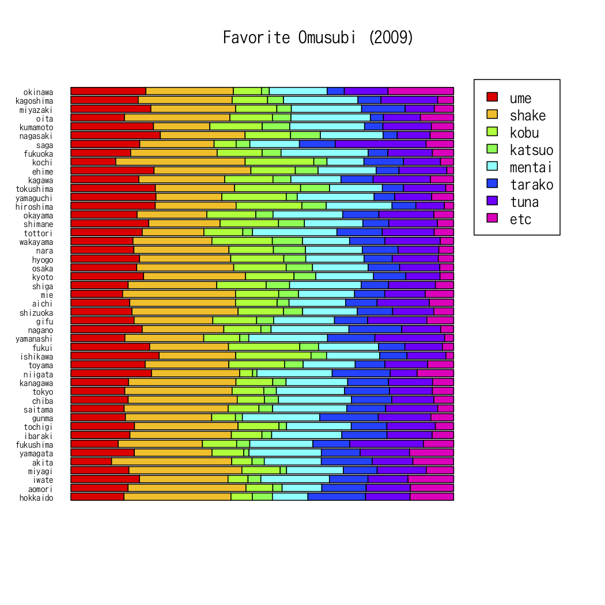

講義の概要
多変量解析 - 第1講
(Press ? for help, n and p for next and previous slide)
この講義について
講義の概要
- 講義題目 : 多変量解析
- 担当 : 村田 昇
- 授業の目標
- 統計解析手法である 多変量解析
の基本的な方法に習熟する
- 大規模データから効果的に情報を抽出する
- データの背後に潜む統計的構造をモデル化して分析する
- 解析法の数理科学的側面を理解する
- 実データに多変量解析を適用する
- 統計解析手法である 多変量解析
の基本的な方法に習熟する
受講にあたっての注意
- 微分積分学と線形代数学を復習しておく
- 自身で解析するための計算機環境を準備する
- 講義の資料は Moodle および Web で公開する
- 成績評価は課題の提出(2回)による
- 回帰分析
- 自由課題
講義計画 (予定)
- オリエンテーション
- 数学的準備 (1回)
- 回帰分析 (3回)
- 第1回レポート (回帰分析終了から2週間で締切)
- 主成分分析 (2回)
- 判別分析 (2回)
- クラスタ分析 (2回)
- 時系列解析入門 (2回)
- 第2回レポート (1月末締切，自由課題)
多変量解析
多変量解析とは
- 複数の変量からなるデータを分析する手法の総称
- 回帰分析 : 複数の量を用いて注目する変数の値を説明する
- 主成分分析 : 全体を説明する少数の特徴量を構成する
- 判別分析 : 特徴量の違いでカテゴリ分けを行う
- クラスタ分析 : 特徴量の違いに着目してクラスタを構成する
- 時系列解析 : 時間とともに変化する現象を記述する
- 機械学習で使われる手法の基礎
- 教師あり問題 : 回帰分析(量的データ)・判別分析(質的データ)
- 教師なし問題 : 主成分分析・クラスタ分析
回帰分析の考え方
- ある変数(目的変数)を別の変数によって説明・予測するための関係式(回帰式)を構成する
- 単回帰 : 一つの変数で目的変数を説明する
- 重回帰 : 複数の変数で目的変数を説明する
- 分析の事例
- 広告宣伝費と商品の売上を予測する式を作り，広告効果があるかどうか判定する
- 築年数・駅からの距離・広さ・間取りで家賃を説明する式を作り，新規に家賃を設定する際に利用する
単回帰の例
| species | body [kg] | brain [g] |
|---|---|---|
| Mountain beaver | 1.350 | 8.1 |
| Cow | 465.000 | 423.0 |
| Grey wolf | 36.330 | 119.5 |
| Goat | 27.660 | 115.0 |
| Guinea pig | 1.040 | 5.5 |
| Dipliodocus | 11700.000 | 50.0 |
| Asian elephant | 2547.000 | 4603.0 |
| Donkey | 187.100 | 419.0 |
| … | … | … |
Figure 1: 体重と脳の重さの関係
Figure 2: 体重と脳の重さの関係 (両対数)
Figure 3: 体重と脳の重さの関係 (単回帰)
重回帰の例
| 年号 | 価格(対数) | 冬の降雨 | 気温 | 秋の降雨 | 経過年 |
|---|---|---|---|---|---|
| 1952 | -0.99868 | 600 | 17.1167 | 160 | 31 |
| 1953 | -0.4544 | 690 | 16.7333 | 80 | 30 |
| 1954 | NA | 430 | 15.3833 | 180 | 29 |
| 1955 | -0.80796 | 502 | 17.15 | 130 | 28 |
| 1956 | NA | 440 | 15.65 | 140 | 27 |
| 1957 | -1.50926 | 420 | 16.1333 | 110 | 26 |
| 1958 | -1.71655 | 582 | 16.4167 | 187 | 25 |
| 1959 | -0.418 | 485 | 17.4833 | 187 | 24 |
| … | … | … | … | … | … |

Figure 4: ワインの価格と生産環境の関係

Figure 5: 生産環境によるワイン価格の予測 (重回帰)
主成分分析の考え方
- 多数の変数が与えられたときに，変数のもつ構造を効率的に記述できる少数個の特徴量を構成する
- 分析の事例
- 野球選手の打撃成績(打率，本塁打数，打点など)から，打者としての特徴を記述する指標を作成する
- 複数銘柄からなる株価の時系列データから，市場全体の変動を記述する総合指標を作成する
主成分分析の例
| 老年人口割合 | 婚姻率 | 交通事故発生件数 | 住居費割合 | |
|---|---|---|---|---|
| 北海道 | 26.0 | 4.86 | 274.2 | 5.9 |
| 青森県 | 27.0 | 4.33 | 386.7 | 5.4 |
| 岩手県 | 27.9 | 4.32 | 261.6 | 7.1 |
| 宮城県 | 22.9 | 5.30 | 447.7 | 5.0 |
| 秋田県 | 30.7 | 3.78 | 266.2 | 7.9 |
| 山形県 | 28.3 | 4.24 | 614.9 | 6.0 |
| 福島県 | 26.1 | 4.73 | 498.9 | 5.7 |
| 茨城県 | 23.8 | 4.92 | 500.6 | 6.8 |
| … | … | … | … | … |

Figure 6: 県別の生活環境(人口動態)の散布図
Figure 7: 県別の生活環境(教育・労働)の散布図

Figure 8: 県別の生活環境(貯蓄・余暇)の散布図

Figure 9: 県別の生活環境の主成分分析
判別分析の考え方
- ある個体が複数のクラスのいずれかに属するとき，その個体の特徴量からどのクラスに属するかを予測するモデルを構築する
- 分析の事例
- 食道がんを患っている人とそうでない人を，年齢・飲酒量・喫煙度から判別する
- 銀行が融資判断をするために，企業の財務データから，その企業が期間内に債務不履行となるか否かを予測する
判別分析の例
| ID | V1 | V2 | V3 | V4 | V5 | V6 | V7 | V8 | V9 | class |
|---|---|---|---|---|---|---|---|---|---|---|
| 1000025 | 5 | 1 | 1 | 1 | 2 | 1 | 3 | 1 | 1 | benign |
| 1002945 | 5 | 4 | 4 | 5 | 7 | 10 | 3 | 2 | 1 | benign |
| 1015425 | 3 | 1 | 1 | 1 | 2 | 2 | 3 | 1 | 1 | benign |
| 1016277 | 6 | 8 | 8 | 1 | 3 | 4 | 3 | 7 | 1 | benign |
| 1017023 | 4 | 1 | 1 | 3 | 2 | 1 | 3 | 1 | 1 | benign |
| 1017122 | 8 | 10 | 10 | 8 | 7 | 10 | 9 | 7 | 1 | malignant |
| 1018099 | 1 | 1 | 1 | 1 | 2 | 10 | 3 | 1 | 1 | benign |
| 1018561 | 2 | 1 | 2 | 1 | 2 | 1 | 3 | 1 | 1 | benign |
| … | … | … | … | … | … | … | … | … | … | … |

Figure 10: 乳癌患者(良性・悪性)の生研検査の散布図

Figure 11: 生研検査の主成分分析

Figure 12: 生研検査による乳癌患者の判別分析
クラスタ分析の考え方
- 特徴量の違いに着目して，妥当な個体のグループ(クラスタ)を構成する
- 階層的な方法 : 系統樹を作成する
- 非階層的な方法 : グループの代表値を推定する
- 分析の事例
- 映画に関するアンケート調査から潜在的なジャンル(グループ)を抽出する
- 顧客の購買履歴から，嗜好の異なる顧客グループに分類し，グループごとの販売戦略を立てる
クラスタ分析の例
| 梅 | 鮭 | 昆布 | 鰹 | 明太 | 鱈子 | ツナ | 他 | |
|---|---|---|---|---|---|---|---|---|
| 北海道 | 13.86 | 27.94 | 5.58 | 5.26 | 9.26 | 15.06 | 11.61 | 11.39 |
| 青森 | 14.93 | 30.79 | 7.01 | 2.43 | 10.36 | 11.58 | 11.58 | 11.28 |
| 岩手 | 17.91 | 23.13 | 5.22 | 3.35 | 17.91 | 10.07 | 10.44 | 11.94 |
| 宮城 | 15.16 | 29.5 | 10 | 1.66 | 14.83 | 8.83 | 12.83 | 7.16 |
| 秋田 | 10.63 | 31.38 | 5.31 | 3.19 | 14.89 | 13.29 | 10.63 | 10.63 |
| 山形 | 16.58 | 20.27 | 8.29 | 1.38 | 18.89 | 10.13 | 12.9 | 11.52 |
| 福島 | 12.37 | 21.99 | 8.93 | 3.43 | 16.49 | 9.62 | 19.24 | 7.9 |
| 茨城 | 15.42 | 26.49 | 7.98 | 2.54 | 18.33 | 11.79 | 11.79 | 5.62 |
| … | … | … | … | … | … | … | … | … |

Figure 13: おむすびの具に関するアンケート分析 (県別の集計)

Figure 14: アンケート結果にもとづく県のクラスタ分析
時系列解析の考え方
- 時間とともに変化する現象を記述するために，未来の値を過去の値で近似する式を構成する
- 自己回帰 (ARモデル) : 過去の影響の記述
- 移動平均 (MAモデル) : 記憶のある不確定性
- 分析の事例
- 市町村の過去の年齢別の人口変動から将来の人口比率の推移を予測する
- 食品・飲料の季節ごとの販売履歴から，将来の需要量を予測して生産計画を立てる
時系列解析の例
| Jan | Feb | Mar | Apr | May | Jun | Jul | Aug | Sep | … | |
|---|---|---|---|---|---|---|---|---|---|---|
| 1949 | 112 | 118 | 132 | 129 | 121 | 135 | 148 | 148 | 136 | … |
| 1950 | 115 | 126 | 141 | 135 | 125 | 149 | 170 | 170 | 158 | … |
| 1951 | 145 | 150 | 178 | 163 | 172 | 178 | 199 | 199 | 184 | … |
| 1952 | 171 | 180 | 193 | 181 | 183 | 218 | 230 | 242 | 209 | … |
| 1953 | 196 | 196 | 236 | 235 | 229 | 243 | 264 | 272 | 237 | … |
| 1954 | 204 | 188 | 235 | 227 | 234 | 264 | 302 | 293 | 259 | … |
| 1955 | 242 | 233 | 267 | 269 | 270 | 315 | 364 | 347 | 312 | … |
| … | … | … | … | … | … | … | … | … | … | … |

Figure 15: 航空機旅客量の変遷

Figure 16: 階差時系列の自己相関分析

Figure 17: 航空機旅客量の予測 (SARIMAモデルによる)
次回の予定
- 確率
- 確率分布
- 確率質量関数・確率密度関数
- 正規分布 (\(\chi^2\)分布，\(t\)分布，\(F\)分布 )
- 統計
- 統計量 (標本平均，不偏分散・共分散，相関係数)
- 最尤法 (尤度関数)
- Bayes の定理
- 関数の微分
- ベクトルによる微分
- 行列による微分